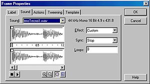
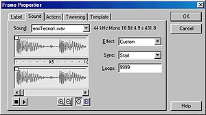
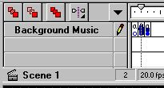

This tutorial shows how to build a background-music on/off toggle that will work across multiple scenes.
The approach used here is to have the background-music load into a LEVEL above the rest on the movie.
The music toggle movie is basically the "Music On/Off Simplified" found at www.enetserve.com/tutorials.
This tutorial requiree intermediate or advanced Flash knowledge and background.
No previous tutorials are required.
Download the source files and have them unzipped for review during this tutorial.
Step-by-step
Overview:
This technique requires two separate movies: 1) the main movie, and 2) a movie that has the same dimensions as the main movie and contains the background-music and its toggle button(s).
The steps can be summarized as follows.
Make the main movie with multiple scenes (two in this case).
Make the background-music movie.
Add the actions to the main movie to load the background-music movie.
Making your main movie.
In this tutorial the main movie will have two scenes and a single button that takes the viewer back and forth between scene 1 and 2 (KISS).
Start Flash and set the movie properties that you wish for the main movie. Modify | Movie and set the size, frame rate, background color, etc.
You can make scene 1 anything you wish as long as it has:
a stop action in the last keyframe of the movie, and
a button to get the viewer from scene 1 to scene 2.
Add another scene with Insert | Scene. You will then notice the scene tabs on the right side of the Flash window. You can double click on these to give them a name that is more descriptive of the scene. In this tutorial they are just named Scene 1 and Scene 2 (default).
Again, you can make this scene anything you like with the same restrictions as scene 1.
Making your background-music movie.
The background-music movie is the exact same size as the main movie with three keyframes. It will hold the background-music and the On/Off toggle button. The only real challenge here is to place the button in the correct location. You can think of it as a transparent overlay with the button on it. You will see everything through this level.
Make the second movie, the background-music, with the same movie properites as the main movie. If you are comfortable working on two movie at the same time you can go to File | New. This tutorial assumes that you have closed Flash after you have finished the main movie.
Insert two additional keyframes for a total of 3 keyframes. Insert | Keyframe or F6.
Import your background-music. File | Import or CTRL R
Move to keyframe 2. This will be your "ON" frame and will show your "OFF" button.
Now you will need an ON button and an OFF button. To start with just grab one from the Library ( Libraries | Buttons )and use words with it, or on it.
Position the ON button so that it will "Overlay" in the correct position when loaded over the main movie.
Trick: with both movies open, place your button in the main movie where it should go. Select it and do CRTL X to remove it. Now switch to the background movie. Then do a CTRL+SHIFT V to place it in the exact same location as it was in the main movie.
Move to keyframe 3. This will be your "OFF" frame and will show your "ON" button.
Position the OFF button so that it will "Overlay" in the correct position when loaded over the main movie.
Now it's time to assign actions, labels, and your background sound to the three keyframes.
Keyframe 3, the "OFF" frame.
Double click on keyframe 3 ( or select Modify | Frame ) to bring up the Frame Properties window. You will use 3 of the tabs, Label, Sound, and Action. They occur in that order.
Click on the Label tab and give it the name "MusicStop", then click on the sound tab and select your sound loop with the Sync set to "Stop" and the Loops set to "0". Finally, click on the Action tab and select the "Stop" action.
Keyframe 2, the "ON" frame.
Now double click on keyframe 2 ( or select Modify | Frame )
Click on the Label tab and give it the name "MusicStart", then click on the sound tab and select your sound loop with the Sync set to "Start" and the Loops set to "9999" (or whatever). Then once again, click on the Action tab and select the "Stop" action.
Keyframe 1, the "INIT" frame.
Now double click on keyframe 1 ( or select Modify | Frame )
Click on the Label tab and give it the name "Init". Then click on the Action tab and select the "Stop" action.
This frame will hold the background-music in a stop state, with no button showing, until you Initialize it from your main movie. If you want
your background-music to start as soon as it is loaded eliminate the stop action in this frame (See source).
CHECK POINT At this point your background sound movie should have the following:

Only three frames, each of which being a key frame,
an "OFF" button in keyframe 2 (which is your "ON" frame),
an "ON" button in keyframe 3 (which is your "OFF" frame),
and keyframe 1 may or may not have a stop action depending on you choice of initialization.
Save this movie (File | Save ) and export it (File | Export ). Remember the name because you will need it for the main movie.
Adding the "Load Movie" action to your main movie.
The assumption here is that you already have a movie that you now want to add background-music to. The key thing to remember is that your background-music movie
may take some time to load if the file size is large. If you try to initialize the music before it has loaded nothing will happen, ever! There are two solutions to this problem:
Assuming that the main movie is much larger than the backgoud-music movie, use a preloade for your main movie and initialize the music after the main movie is loaded with the method used in this tutorial.
Change keyframe 1 ("Init") of the backgroud-music movie. Eliminate the "Stop" action and let it go directly to StartMusic.
This tutorial will use the first method and the example (source) uses the second.
Start Flash and open your main movie ( File | Open).
Double click on the first keyframe of your main movie or select Modify | Frame to open the Frame Properties window.
Click on the action tab and choose Load Movie.
In the URL window type the name of your background-music movie, in our case it is "backmusic.swf".
In the Level # window type a number above any other levels you may have used and click OK. I used 10.
Now pick a point on your timeline (far enough along to insure that the background-music is loaded) where you want the music to start and insert a keyframe F6 or Insert | Keyframe.
Double click on this keyframe and assign a tell target action with a target of _levelN/ where N=the level number you assigned. In this case it would be _level10/
Then for the action of the tell target choose GoTo | Label | StartMusic.
Resave your file and export and you are done.
If you have used method 2 for your sound initialization then skip steps vi - viii.
Need More Help?
[Download Source] Don't forget to get the source files and look them over.
Troubleshooting
If you have carefully followed these directions and you still can't get it to work it may be a loading time problem. You can't tell the background-music movie to GoTo the Label StartMusic until it has loaded.
If you do, nothing will happen. Try the alternative method of not using a stop action in keyframe 1 of your music movie. Also, if your background-music movie is large you should include a preloader.